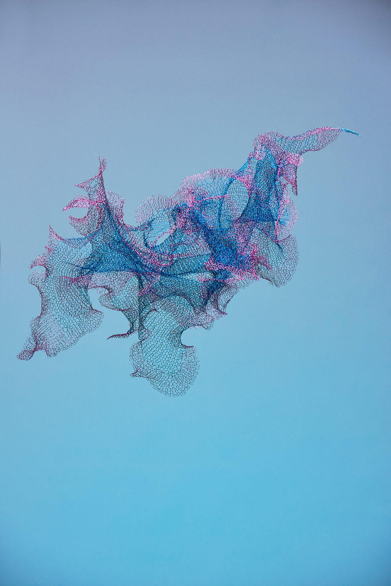
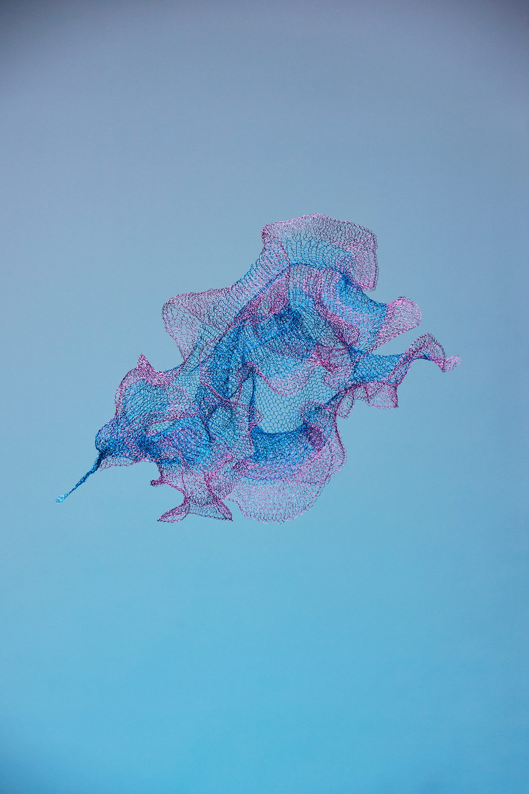
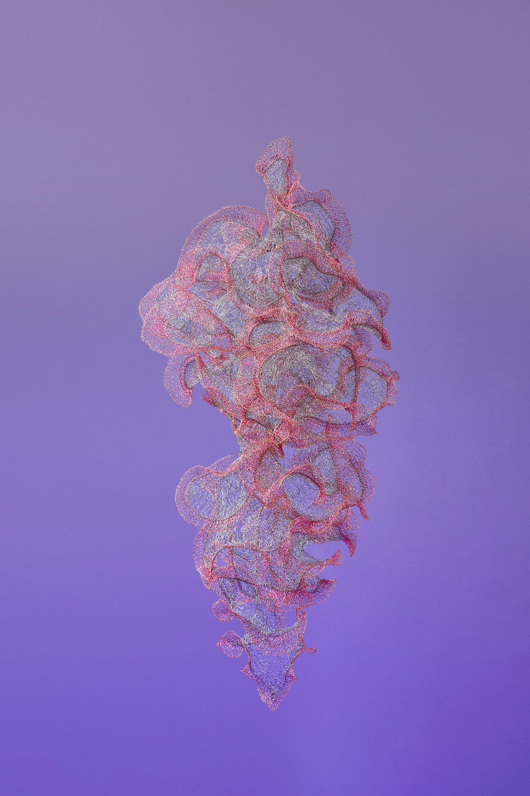
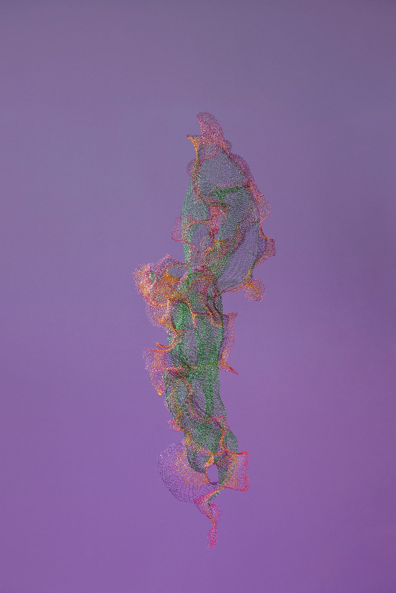
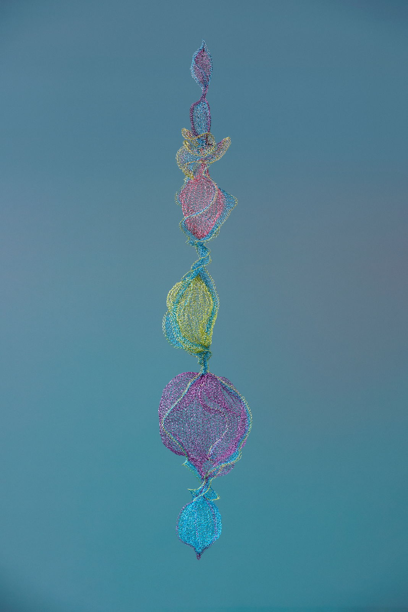
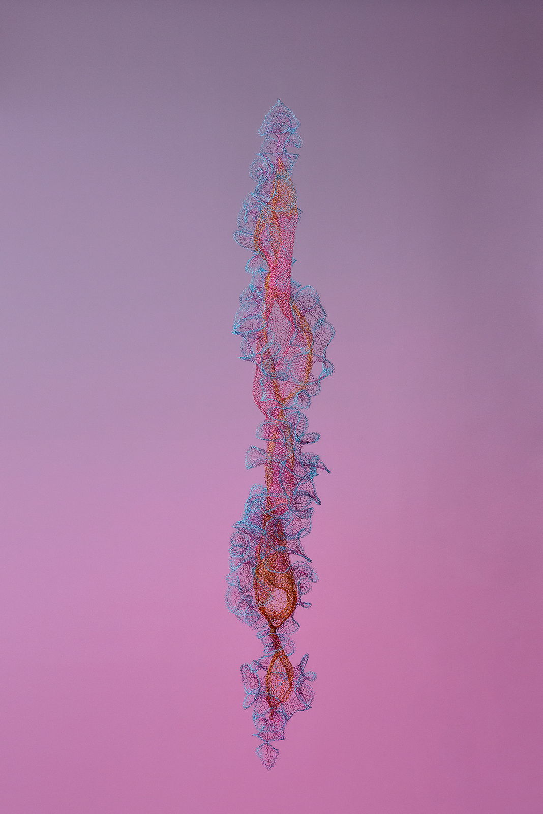
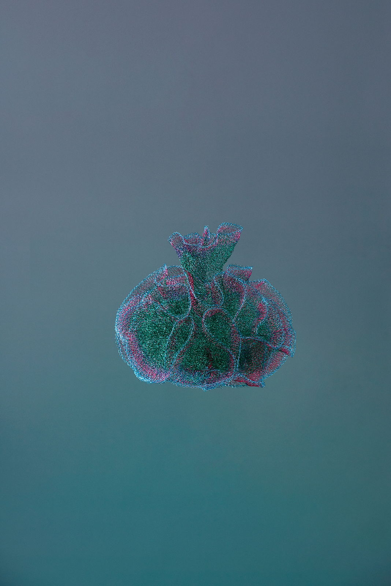
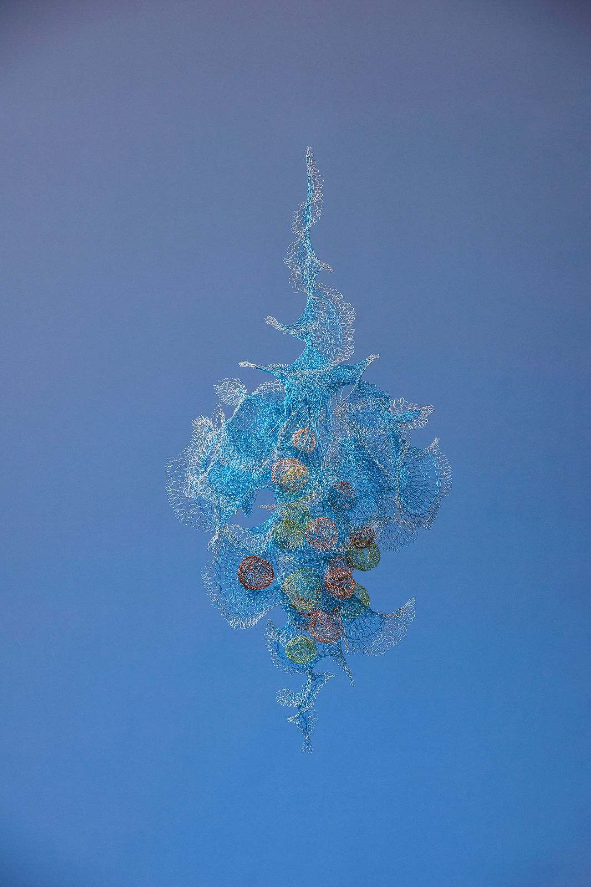
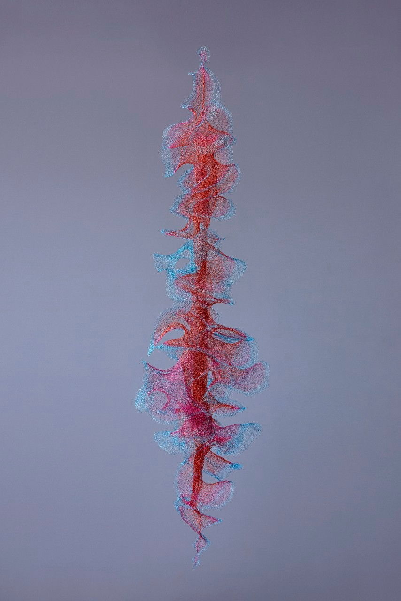
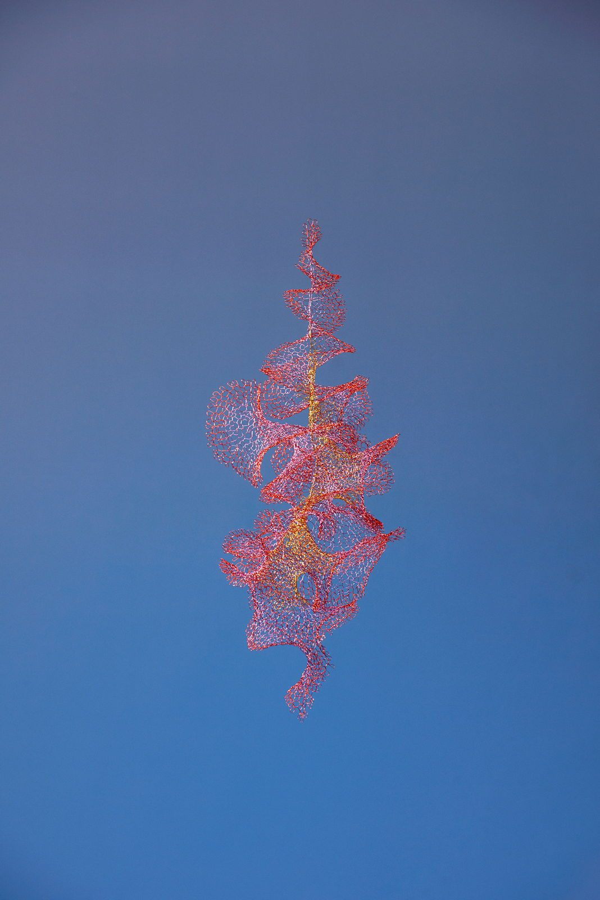
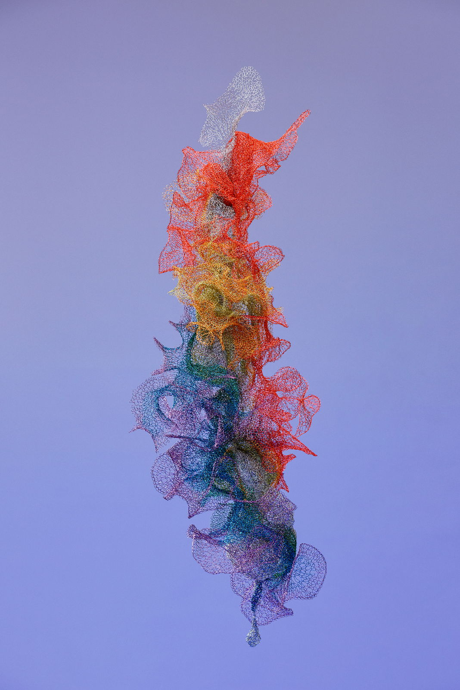
This series adapts a traditional crochet technique inherited from the artist’s grandmother. These suspended sculptures are meticulously woven from enameled copper wire. The grandmother’s character, a blend of delicate grace and the formidable tenacity of water, permeates these forms, grounding the work in a lineage of resilience.
Working without preparatory sketches, the artist engages directly with the material. Through a meditative process, she accesses the subconscious, intuitively crocheting organic lines into airy volumes. Each work becomes an internal conversation, a tactile visualization of abstract concepts.
These sculptures embody nonlinear time, exploring the friction between freedom and its inevitable constraints. If copper wire acts as a metaphor for time, its unwinding from the spool reveals the preexistent. The resulting webs possess a semitransparency that destabilizes the distinction between point, line, plane, and volume. These permeable, intertwined structures illustrate the coexistence of past, present, and future, challenging the linearity of time and the causality of free will. Through looping, a singular line converges and binds into a discernible web. The resulting forms shimmer within a net that signifies both captivity and security, where the technique simultaneously restricts and constructs the form.
Materiality, gravity, and light conspire to define each work’s final appearance. Analogous to the sculptural process, human existence is shaped by a dialectic of genes and environment, creating a tension between autonomy and limitation. The work poses a fundamental question: is free will an independent entity, or merely a byproduct of encoded determinants? By reflecting light and casting shadows, these wire webs reconcile opposites, inviting us to consider if free will is merely the shadow of programmed code. The sculptures confront the paradox of prophecy: if the future is visible, is destiny predetermined? In doing so, they cast doubt on the linearity of time and suggest that free will may be a human invention—a loop that continues, unresolved.